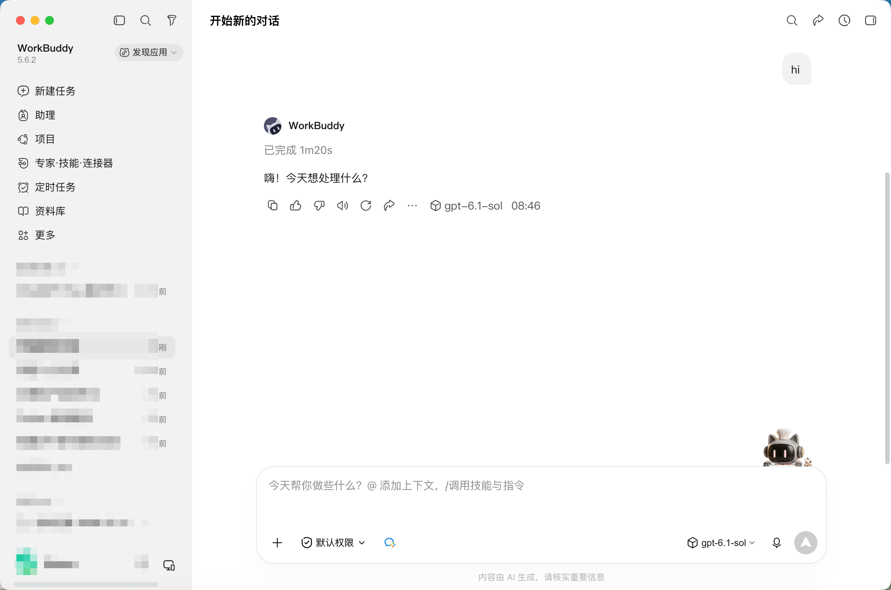
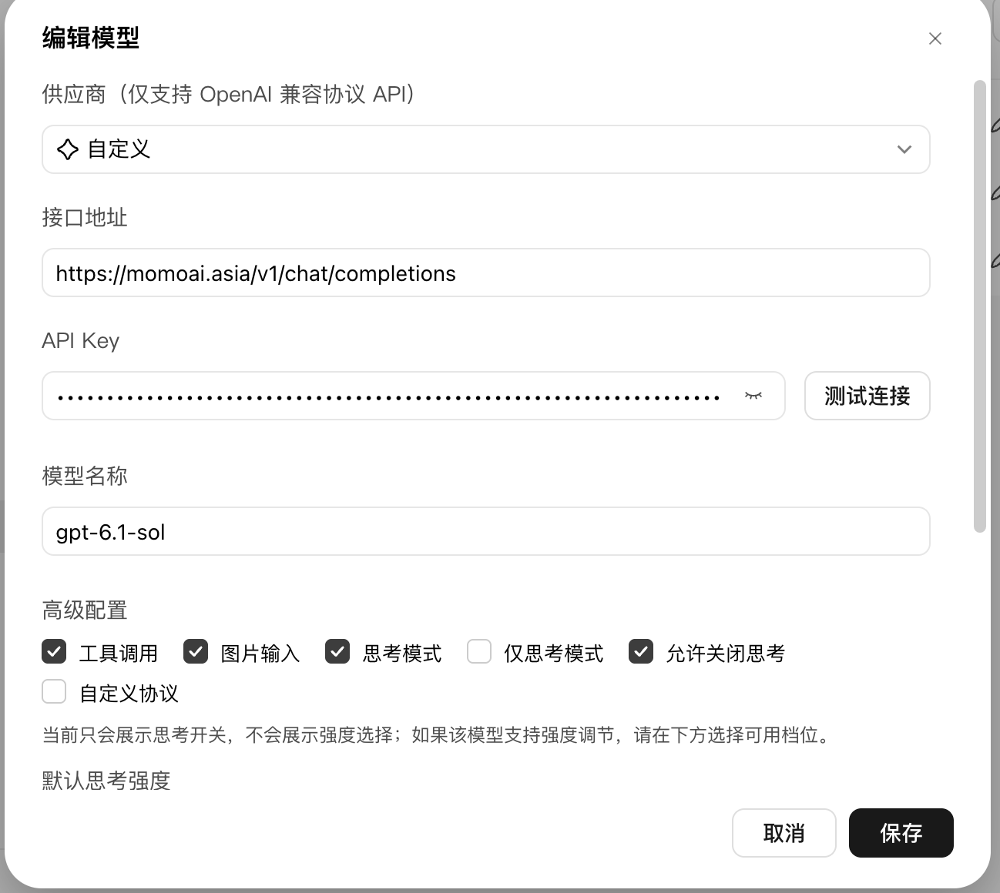
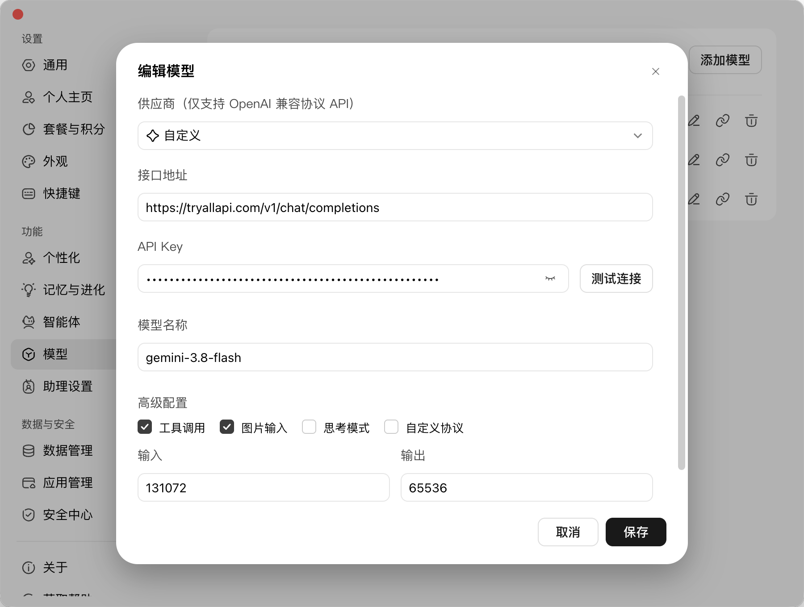

WorkBuddy 一键接通 gpt-6.1-sol：MomoAI / TryAllAPI 把最新模型接到桌面
官方客户端默认列表更新慢？新模型出来却用不了？
用 WorkBuddy 的自定义供应商，把线路接到 MomoAI 或 TryAllAPI，模型名填 gpt-6.1-sol，桌面端立刻能聊、能写码、能开工具调用——同一套界面，跟上最新 GPT。
下面三张都是实机截图：已经在对话里跑通 gpt-6.1-sol，以及两条可直接复用的接入配置。
先收藏入口（链接写全，方便下单/开 Key）：
- MomoAI 包月 / 控制台：https://momoai.asia/home
- MomoAI 站点：https://momoai.asia
- TryAllAPI 全模型 API：https://tryallapi.com/
正文不写具体价格；套餐与额度以页面实时显示为准。截图里的 Key 已打码，你只要换成自己的即可。
一、先看结果：桌面上已经在用 gpt-6.1-sol
很多人卡在「配了模型但不确定有没有生效」。WorkBuddy 里有两处一眼能验真：
- 回复气泡下方的模型标签：
gpt-6.1-sol - 输入框右侧当前选中的模型名：同样是
gpt-6.1-sol

左侧还有 新建任务、助理、项目、专家·技能·连接器、定时任务、资料库——日常工作流不用换软件，只是把「大脑」换成更新、更强的模型。
一句话：配对接线，就能在熟悉的 WorkBuddy 里吃到最新 GPT 能力。
二、为什么选 MomoAI / TryAllAPI？
| 你的需求 | 更合适的入口 | 能立刻干什么 |
|---|---|---|
| 想稳定用 GPT 最新档、桌面直接聊 | MomoAI | 自定义接口 + gpt-6.1-sol，开工具/识图/思考 |
| 想一条 Key 聚合多模型、随时换线 | TryAllAPI | 同一自定义供应商换模型名，GPT / Gemini 等都能挂 |
| 两个都想留着对比手感 | 两个都配 | 底部下拉秒切线路，哪条顺手用哪条 |
不用等客户端内置上架；OpenAI 兼容协议填好就能测通。新模型上架控制台后，往往 只改模型名称 就能继续追新。
三、3 分钟接入：编辑模型 → 自定义
路径：设置 → 模型（或模型下拉里的编辑/添加）→ 编辑模型。
| 字段 | 怎么填才稳 |
|---|---|
| 供应商 | 选 自定义（仅 OpenAI 兼容） |
| 接口地址 | 必须写完整 .../v1/chat/completions |
| API 密钥 | 粘贴后点 测试连接，通了再保存 |
| 模型名称 | gpt-6.1-sol（以控制台实际 ID 为准） |
| 高级配置 | 建议打开 工具调用、图片输入；支持思考就勾 思考模式 |
保存 → 回对话 → 底部选中该模型 → 发一条真实任务。看到回复标签变成 gpt-6.1-sol，就算接通成功。
四、方案 A（主推）：MomoAI 接 gpt-6.1-sol
适合想 快速用上最新 GPT、桌面体验完整 的同学。先去 https://momoai.asia/home 开好账号 / Key，再按图填写：
- 供应商：自定义
- 接口地址：
https://momoai.asia/v1/chat/completions - API 密钥：你的 MomoAI Key → 测试连接
- 模型名称：
gpt-6.1-sol - 高级配置：勾选 工具调用、图片输入、思考模式、允许关闭思考

为什么这条线香：接口一次配好，后面 Sol / Astra 等新 ID 出来，多半只要改模型名；WorkBuddy 侧的项目、定时任务、资料库都能继续用。
现在就去开通：https://momoai.asia/home
五、方案 B：TryAllAPI 挂最新模型（可与 A 并存）
想 一条 API 玩多家模型、或给 gpt-6.1-sol 留一条备用线路，用 https://tryallapi.com/ 。截图示例配的是 gemini-3.8-flash，步骤完全一样——接 GPT 时把模型名改成 gpt-6.1-sol 即可。
- 供应商：自定义
- 接口地址：
https://tryallapi.com/v1/chat/completions - API 密钥：TryAllAPI Key → 测试连接
- 模型名称：GPT 填
gpt-6.1-sol；也可保留 Gemini 等其它最新 ID 做对照 - 高级配置：工具调用 / 图片输入按需开；思考模式看该模型是否支持
- 输入 / 输出：示例 131072 / 65536，可按弹窗默认微调

推荐玩法：MomoAI 跑主力 gpt-6.1-sol，TryAllAPI 挂第二线路或其它新模型，对话底部一键切换，延迟和效果自己说了算。
开通聚合 API：https://tryallapi.com/
六、照着点就行的清单
- 打开 https://momoai.asia/home （或 https://tryallapi.com/ ）拿到 Key，确认控制台有
gpt-6.1-sol。 - WorkBuddy → 编辑模型 → 供应商 自定义。
- 接口填完整：
- MomoAI：https://momoai.asia/v1/chat/completions
- TryAllAPI：https://tryallapi.com/v1/chat/completions - 粘贴 Key → 测试连接 → 模型名
gpt-6.1-sol→ 勾选能力 → 保存。 - 新开对话选中该模型；确认回复下方标签一致。
配通一次，后面追新模型成本极低。
七、避坑（少走弯路）
测试连接失败
接口是否漏了 /v1/chat/completions？Key 是否多空格？网络是否能打开对应站点？
列表有模型，回复标签却不是它
底部下拉还停在旧模型——切换后再发一条新消息。
思考模式没有强度档
有的模型只支持开/关，属正常；能开工具和识图已经很香。
想一直跟最新 GPT
别重装客户端：同一自定义供应商，只改控制台里的新模型 ID。
八、收个尾：今天就能用上最新模型
WorkBuddy 负责工作流，MomoAI / TryAllAPI 负责把 gpt-6.1-sol 等最新模型送到你鼠标边。自定义供应商 + 完整接口 + 一次测试连接，桌面端就能开干。
- 想稳定追 GPT 最新档 → https://momoai.asia/home
- 想一条 Key 聚合多模型、随时换线 → https://tryallapi.com/
- 站点首页 → https://momoai.asia
配好两处验真：输入框右侧选择器 + 回复下方模型标签。标签亮起 gpt-6.1-sol，就可以把今天的活丢给它了。